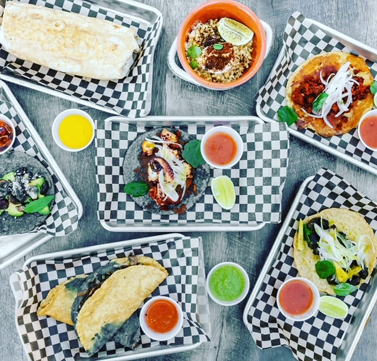
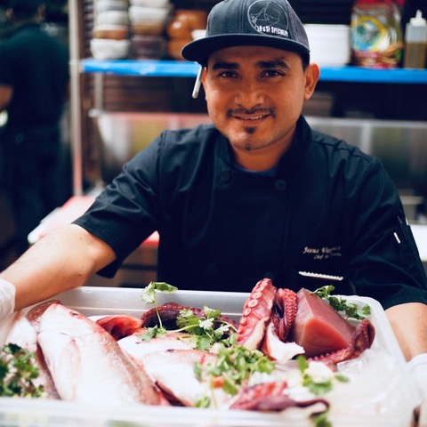

Menu

About

Jesus Varguez
Jesus is dedicated to bring his Mexican flare and culture to the next level. He has worked in many acclaimed restaurants and hopes to introduce his Mayan roots to the Bay Area. Just like his ancestors, he works with seasonal ingredients and his menu is always changing to get the best from nature. His specials include El Pastor, Octupus Tacos, and much more. Follow him on his journey!